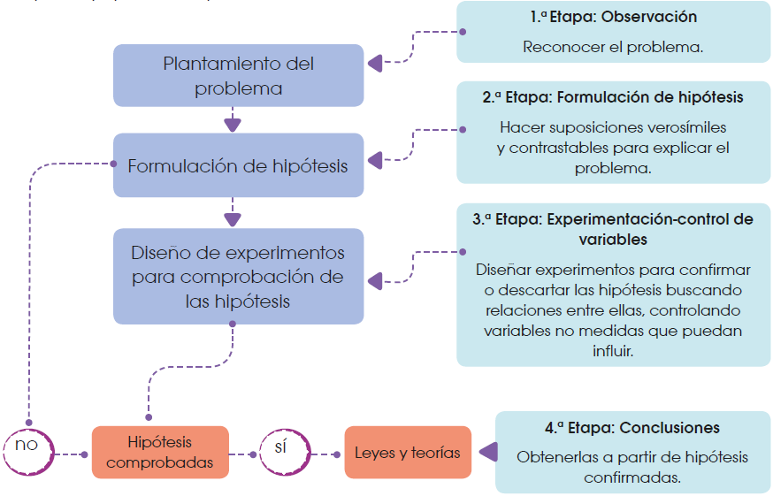

1 El método científico
El método científico es una herramienta fundamental para explorar, entender y explicar los fenómenos naturales. Es un proceso sistemático que se utiliza para entender cómo y por qué ocurren los fenómenos en la naturaleza, en el caso de la biología, en los seres vivos.
En la ciencia, se deben cumplir una serie de pasos para que las conclusiones a las que se lleguen sean válidas y aceptables. A estas etapas las conocemos como método científico.
El método científico es un proceso sistemático basado en la observación y la experimentación, gracias al cual obtenemos conocimiento científico cuyo objetivo es desvelar las leyes y principios que rigen el mundo natural, proporcionando una base sólida para el avance de la tecnología.
Para llegar a este conocimiento, es necesario seguir varios pasos:
Observación: Reconocemos un problema al aplicar los sentidos a algún objeto o fenómeno natural. Entonces planteamos el problema en forma de pregunta a la que hay que dar respuesta.
Formulación de hipótesis: Hacemos suposiciones lógicas y que puedan ser contrastables para dar respuesta a la pregunta.
Experimentación: Diseñamos experimentos que puedan confirmar o descartar la hipótesis planteada. En este punto es importante controlar las variables que puedan influir en el experimento. Si el experimento ha demostrado que la hipótesis no es válida, se ha refutado la hipótesis, por lo que debemos plantear una hipótesis nueva y seguir de nuevo todos los pasos. Si después del experimento la hipótesis se considera cierta, creamos una teoría.
Conclusión: Una vez que hemos confirmado la hipótesis, redactamos una teoría o una ley que explique el problema inicial.

Gracias al método científico, podemos construir un conocimiento que explique cómo funciona el mundo natural, pero para aplicar este método de forma exitosa, hay que cumplir ciertos requisitos:
Para empezar, es importante eliminar los prejuicios. Esto significa que tenemos que ser lo más objetivos posible, sin permitir que nuestras ideas previas sobre un concepto afecten al análisis o a la experimentación. Debemos demostrar una actitud imparcial.
A la hora de plantear hipótesis y experimentos que prueben o refuten la hipótesis, es importante ser creativo para poder proponer ideas novedosas, pero siempre desde un razonamiento lógico y teniendo en cuenta que las hipótesis deben ser comprobables mediante un experimento, y que ese experimento pueda repetirse en distintas condiciones.
Durante la realización del experimento, hay que tener en cuenta todas las variables que puedan influir en el mismo. Una vez que tengamos claras las variables y cómo afecta cada una al fenómeno que se está estudiando, debemos controlarlas o reducirlas al mínimo para asegurarnos de que los datos que obtendremos del experimento estén más apegados a la realidad.
Al analizar los datos, es necesario ser honesto y no manipular el experimento ni modificar los datos para hacer que la hipótesis se cumpla. El análisis debe ser objetivo e imparcial.
Una característica esencial de toda teoría científica es su falseabilidad, lo que significa que debe poder ser sometida a pruebas que podrían demostrar que es incorrecta. Si una teoría no puede ser refutada por ninguna observación o experimento, no se considera científicamente válida.
Para finalizar, es importante tener la mente abierta a nuevas ideas. A lo largo de toda la historia de la ciencia, se han afirmado o descartado teorías y leyes sobre el entorno que nos rodea. Esto es algo normal, ya que, al mejorar la tecnología, podremos mejorar la experimentación, y así podremos acercarnos más al conocimiento científico. No debemos pensar que una teoría es completamente cierta, sino que debemos asumir que es una forma de expresar, lo más acertadamente que podamos, un fenómeno natural.